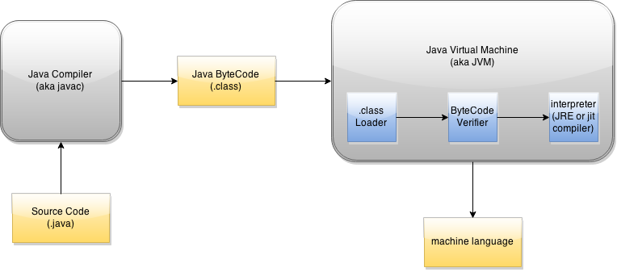

Lesson 1: Differences in Philosophies and Compilation Processes
It is very easy for beginners to assume that programming languages like Java and C++ are the same simply because the syntaxes are similar. As a matter of fact, one reason as to why Java and C++ seem the same is because Java is written in C++; however, both languages were developed with different goals in mind. Although the languages appear to be similar on the surface, they differ greatly when they are observed at a deeper and internal level. To truly understand Java, we must first understand its origin, C++. In a series of lectures, we will cover the philosophical and practical differences between Java and C++.
History of the Programming Languages
In the early 1970s, a researcher scientist by the name Dennis Ritchie developed a language in Bell Labs called C. Originally, the C language was meant to help Dennis and his partners develop an operating system for a computer in Bell Labs. The operating system they developed is commonly known as UNIX. The birth of UNIX sparked other researchers' and developers' curiosities and the popularity of C and UNIX grew in tandem.
Due to C's emphasis on control flow and data structures, it became the default language among system programmers. As C grew more popular, a computer scientist by the name of Bjarne Stroustrup recognized the need for a language that provided tools for large software development while performing fast, low-level calculations. Stroustrup created a set of standardized libraries and macros called "C with Classes" which later became the programming language C++. The development of this extension was an attempt to introduce Object-Oriented Programming (OOP) to C programmers while "guaranteeing" a comfortable transition from C to C++, hence the title "C with Classes. " Unfortunately, many C programmers struggled to comprehend the new OOP craze that C++ brought. The sheer difference in solving a problem with sequential logic (C programming) and OOP logic (C++ programming) led to the decision of making C++ its own language.
In 1991, James Gosling and Patrick Naughton of Sun Microsystems designed a programming language by the name "Green." It was developed for consumer, embedded systems - such as VCRs - with the idea of creating software that was simple, secure and compatible for many different computer architectures. The Green development team adopted the "Write Once, Run Anywhere" (WORA) slogan to entice customers; unfortunately, customers were not interested and many software did not run on different architectures as promised. In 1994, the Green development team realized the language could instead be used to develop browsers and applets. By 1995, the language was revamped and reintroduced at SunWorld exhibition as the new and improved Java. Since then, Java has grown astronomically. The Java development team has included an abundance of libraries, GUI frameworks, compiler and language fixes. It properly supports different computer architectures and is arguably one of the easier and safer programming languages.
Currently, Java and C++ are among the top OOP programming languages. Java and C++ have many fans and this often leads to disputes about which language is better; however, it is important to know that there is no better language. Instead, it is proper to say that one language is the better choice in a particular programming environment or project. Programming languages are tools meant to decrease effort and errors. When a programmer develops software, the goal must harmonize with the language of choice. Whether the language and software syncs often depends on the language's philosophy and resources.
Difference in Philosophies
Given that Bjarne Stroustrup wanted to create a language capable of performing fast, low-level calculations in large scale software, C++ was soon associated with the key phrase that many programmers came to appreciate, "If you don't want it, you don't pay for it." On the other hand, Java was created with an emphasis on safety, simplicity and portability which resulted in crisp syntax that hid most low-level nuisances from users. The creators of Java sought this as an essential to its attribute. They believed that with more overhead and cluttering, programmers were more prone to generating error filled software (both logical and syntactical). Below is a brief pros and cons list for Java and C++:
Java
Pros:
Simple
"Object-Oriented"
"Safety and Security"
"Garbage Collector"
"Multi-platform (portability)"
Cons:
More Features = Less Performance
Less Memory Management Control
C++
"Trust the Programmer"
"Object-Oriented"
Targeted Computer Architecture = Maximized Performance
"High level and Low level programming"
Legacy Code - C code compiles in C++
Cons:
"Dangerous"
"Targeted platform"
Legacy Code - problems in C will always emerge in C++
(Legacy Code is a double-edged sword.)
Misconceptions
*Note that in the Pros and Cons list, both Java and C++ list "Object-Oriented" as a Pro. Although OOP is a powerful tool, it is not a "unique" attribute that programmers should put too much weight into when choosing Java as a language since most languages now support OOP. Another misconception is Java being a "dangerous" language with complexity; an example being a jungle as a cover page for Cay Horstmann's textbook, Big Java - an image that readers may not quite understand. The idea of Java being exotic and dangerous like a jungle is rather counter intuitive to its "simple, secure and portable" theme. Perhaps one of the better analogies that compares Java and C++ would be riding in a luxury bus or riding on a fast motorcycle. Java is like a luxury bus that users can comfortably enjoy because it contains features that perform many low-level tasks such as Garbage Collection. On the otherhand, C++ is like a motorcycle. Its ability to metaphorically weave through lanes at high speeds perfectly portrays the advantages and risks of coding in C++ since the user is responsible for internal details. More of these terms and concepts will be elaborated upon in lessons such as "Memory Models," "Java References," and "C++ Pointers and References."
*Please note that I am not stating Cay Horstmann claims that Java is "dangerous." I am simply stating the imagery of a jungle with a tiger implies a dangerous and exciting environment (something that readers may misinterpret).
Difference in Compilation Processes
As a programmer, it is important to understand the flow of source code for several reasons. First, understanding how code is interpreted by a machine helps users understand the internal differeces between Java and C++. Second, understanding the processing of code also helps programmers optimize their software - Operating Systems and software refactoring. The following diagrams show the Life Cycle of a source code with respect to its langauge.

Like many other languages, both Java and C++ can be edited using Notepad. However, most programmers use Integrated Development Environments (IDE) in order to edit their code. These IDEs often provide many tools such as syntax correction, libraries, compilers and Debuggers to help programmers develop software with ease. Imagine writing a 200 page essay using Notepad instead of Microsoft Word. The purpose of IDEs is to assist programmers edit text files just as the software they develop should assist consumers/ users.
First, the programmer writes source code - a list of commands in a particular programming language. As stated previously, this source code is often developed in an IDE. When the software is finished, the programmer can directly execute the source code in the IDE. This sends the source code to the java compiler (javac) so that it may be converted into another file with the ".class" extension. Failure to convert from a .java file to a .class file is known as a compile time error. Compile time errors consist of used uninitialized objects and variables, syntax errors, improper return statements and etc.
The act of converting a .java file into a .class file is analogous to translating Math statements from a foreign language to English (arguably a universal language), before converting them directly to Math Equations. Unlike C++, Java does not directly convert your source code into assembly language (the universal langauge of all computers and electronics). Instead, Java converts source code (your Pseudo english statements) into a "universal language." As long as the computer architecture has Java installed, the program can be executed.
The real magic of Java occurs in its unique Java Virtual Machine (JVM). The JVM is responsible for converting the "universal" Java ByteCode from the .class file into the final universal language computers understand, Assembly Language.

Homework and Quizzes
Homework will be posted at a later time.
Before we move on to more advanced topics, take the time to refresh your understanding in Java: Quiz 0: Java Assessment. It will make the future concepts easier to understand. Each solution will list the topics you need to cover if you answer incorrectly.